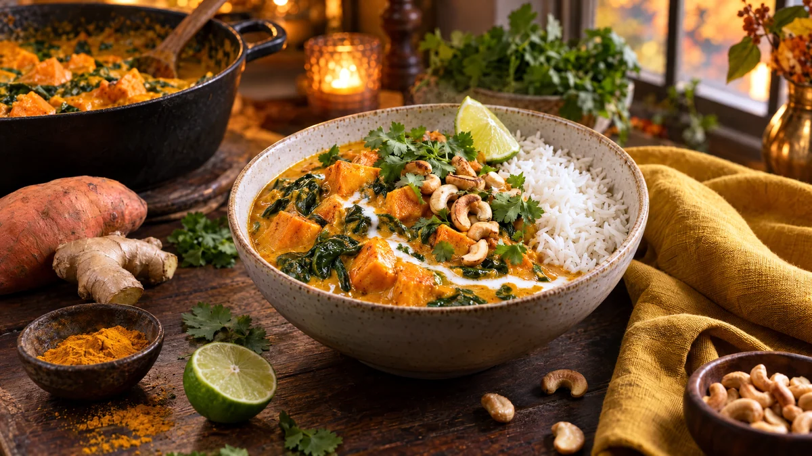

RESTFEST · RECEPTHuvudrätt
Krämig kokoscurry med sötpotatis och spenat
Två sötpotatisar, en burk kokosmjölk och en påse spenat puttrar ihop med curry, ingefära och vitlök till en solgul, krämig gryta. Sötpotatisen blir mjuk som smör, och spenaten vänds ner sist så att den behåller sin klargröna färg. Toppa med koriander och rostade nötter, och servera med ris. Allt i en kastrull.
- Förberedelse
- 15 min
- Tillagning
- 25 min
- Portioner
- 4
- Nivå
- Nybörjare
 Det här behöver du
Det här behöver du
JÄMFÖRT MED DIN KYL
Tryck på + vid det du behöver köpa.
Curry
Till servering
Gör så här
- Hacka löken. Riv vitlök och ingefära. Skala sötpotatisen och skär den i tärningar, ca 2 cm.
- Fräs löken i oljan i en stor kastrull på medelvärme i 5 minuter. Tillsätt vitlök, ingefära och alla kryddor och fräs 1 minut, tills det doftar.
- Lägg i sötpotatisen och rör om så att den täcks av kryddorna.
- Häll i krossade tomater, kokosmjölk och vatten. Spara 2 msk av kokosmjölken till garnering. Koka upp och låt sjuda under lock i 15–20 minuter, tills sötpotatisen är mjuk.
- Rör ner kikärtorna och låt dem bli varma.
- Vänd ner spenaten och låt den sjunka ihop i 1 minut. Smaka av med limesaft och salt.
Dekoration och servering
- Lägg upp riset i djupa skålar och skeda curryn bredvid, så att både det gula och det vita syns.
- Ringla den sparade kokosmjölken i en virvel över grytan.
- Toppa med koriander och rostade nötter, och servera med limeklyftor.
- Curryn blir ännu godare dagen efter och går bra att frysa.
Mått och ugnstemperaturer
Måtten är svenska (dl, msk, tsk, krm). Ugnstemperaturerna gäller vanlig ugn med över- och undervärme; med varmluft, sänk med 20 grader.